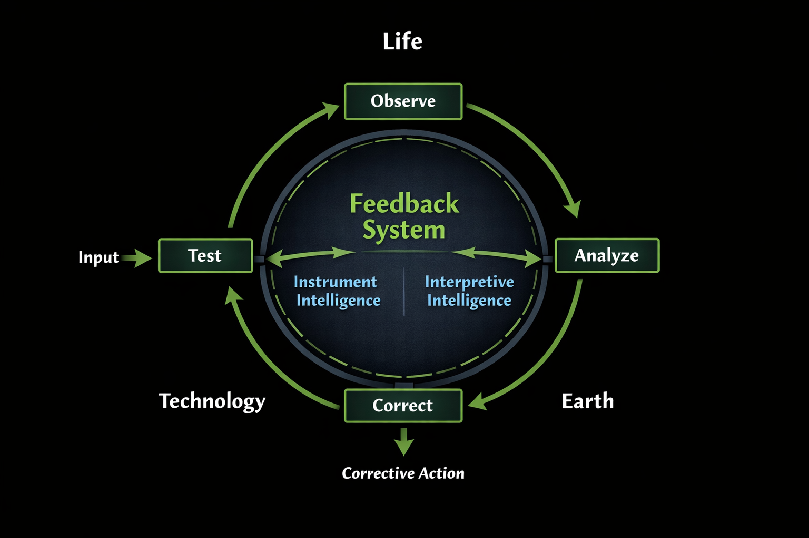

BTE Alliance
Life – Technology – Earth
Life – Technology – Earth
A feedback-driven model for maintaining alignment between Biological, Technological, and Earth systems.

The system operates as a continuous feedback loop. Observations are made, analyzed, tested, and corrected. Over time, this process allows civilization to move toward stability and coherence.